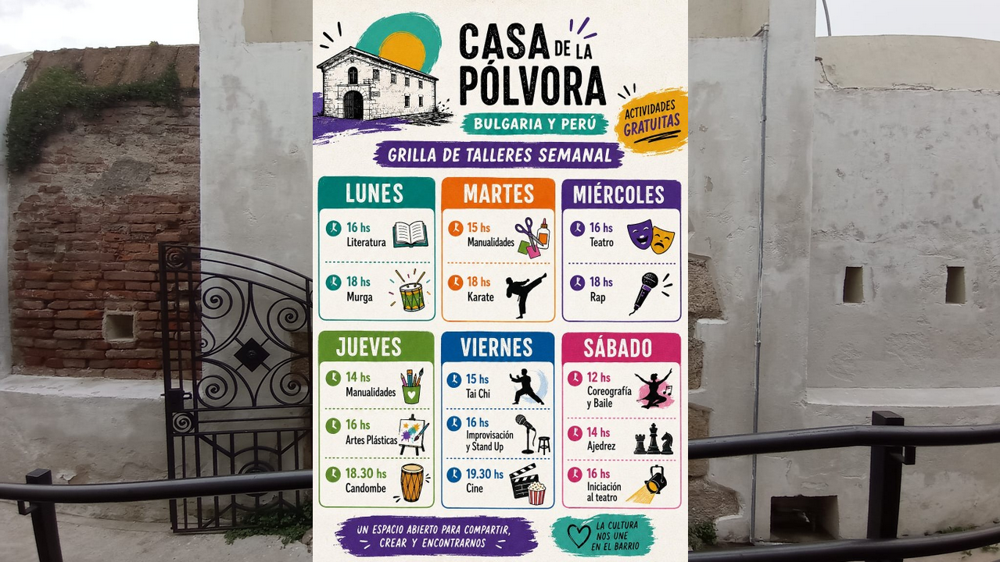
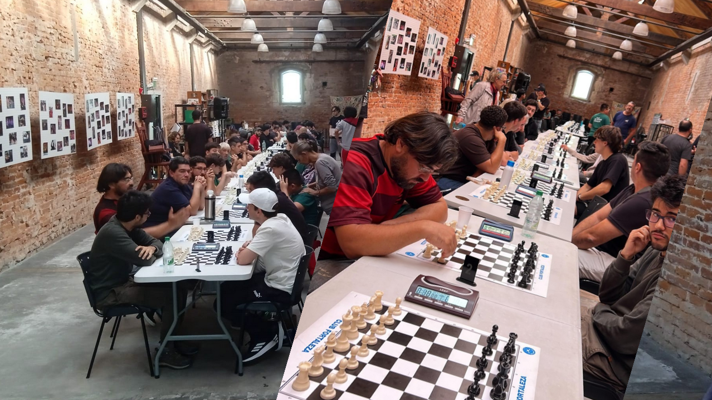
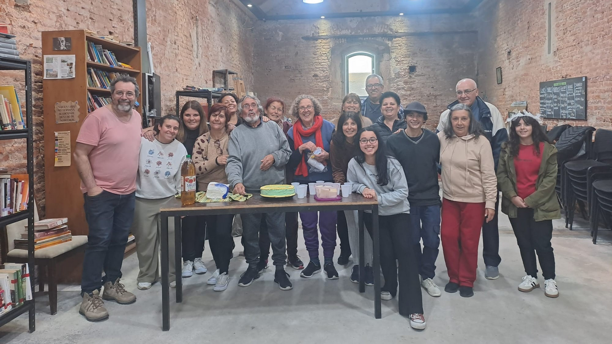
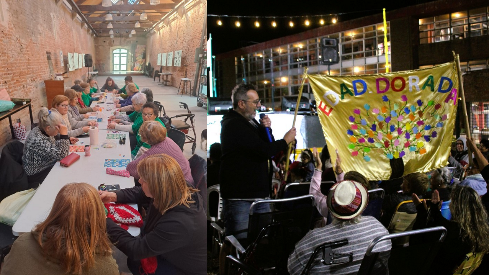
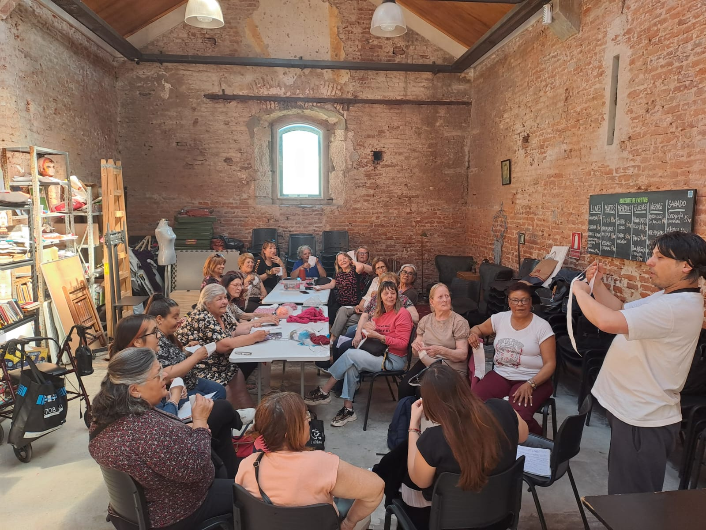
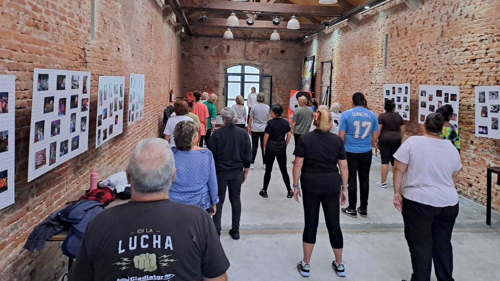
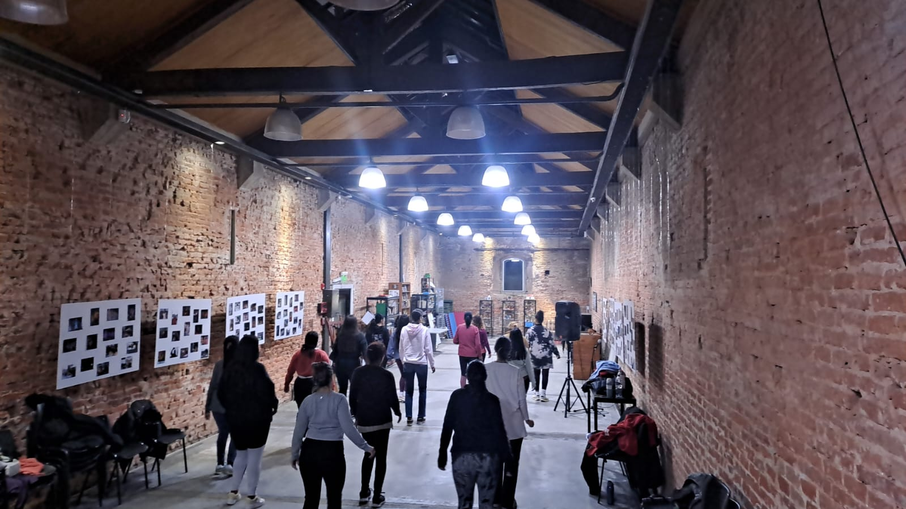
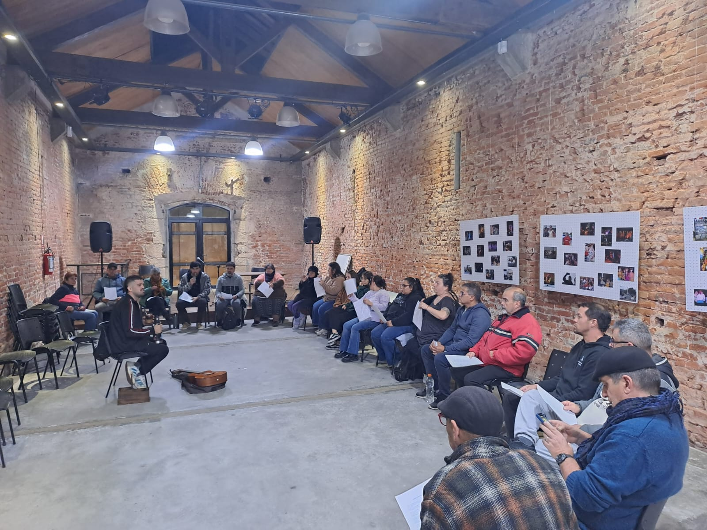

Asociación de Amigos de La Casa de la pólvora, es una organización sin fines de lucro que tiene como objetivo apoyar y promover las actividades culturales y artísticas que se desarrollan en el centro cultural. A través de la colaboración con la comunidad, buscamos fortalecer el vínculo entre los vecinos y vecinas, fomentando la participación activa en la vida cultural del barrio.

Un centro cultural abierto al barrio que rescata la memoria histórica de la comunidad, mediante actividades artísticas, talleres y propuestas para todas las edades, apostando a que los vecinos y vecinas sean sujetos constructores de su cultura.








Nuestros talleres, apuntan a fomentar la participación activa de la comunidad en la vida cultural del barrio. Capacitando en varias disciplinas del arte y la cultura, a niños, jóvenes y adultos, con el objetivo de fortalecer el tejido social y promover la inclusión cultural.